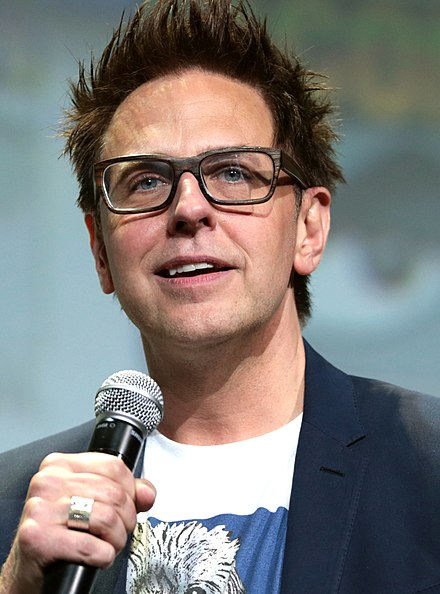

Introduction:
As Marvel fans eagerly await the release of "Guardians of the Galaxy 3," the anticipation and excitement continue to build. The third installment of the beloved superhero franchise promises to deliver an epic adventure that will captivate audiences worldwide. With the success of the previous movies, the expectations for "Guardians of the Galaxy 3" are sky-high. Fans eagerly await the return of the witty banter, thrilling action sequences, and emotional character moments that have defined the franchise.
A Visionary Director:

Director James Gunn, known for his unique vision and storytelling, is back at the helm for "Guardians of the Galaxy 3." Gunn's previous work on the franchise has garnered critical acclaim and a loyal fan base. His ability to blend humor, heart, and action has made the Guardians movies stand out among the vast Marvel Cinematic Universe. Fans can expect Gunn's distinct style to once again bring these beloved characters to life.
The Return of the Star-Studded Cast:
_poster.jpg)
One of the key factors that has contributed to the success of the Guardians franchise is its exceptional ensemble cast. Chris Pratt's charismatic portrayal of Peter Quill (Star-Lord), Zoe Saldana's fierce and enigmatic Gamora, and Dave Bautista's hilarious yet heartfelt Drax the Destroyer have endeared these characters to fans worldwide. Additionally, the vocal talents of Bradley Cooper as Rocket and Vin Diesel as Groot have brought these CGI characters to life in an unforgettable way. The reunion of this talented cast ensures that the chemistry and dynamics that made the previous movies so enjoyable will be present in "Guardians of the Galaxy 3."
Mysterious Plot Details:
Marvel Studios has been tight-lipped about the plot details of "Guardians of the Galaxy 3." The secrecy surrounding the movie has only fueled the anticipation and speculation among fans. What new adventures await the Guardians team? Will they face new cosmic threats? How will the events of previous films tie into the narrative? These questions have sparked numerous fan theories and discussions, creating a sense of excitement and intrigue.
Expanding the Marvel Cinematic Universe:
"Guardians of the Galaxy 3" is not just a standalone film; it will also play a significant role in the larger Marvel Cinematic Universe. As the franchise has demonstrated in the past, the Guardians team has connections and interactions with other Marvel characters. The movie is expected to tie into the ongoing storylines and events established in previous films, setting the stage for future Marvel movies and expanding the cosmic side of the MCU.
Trailers and Teasers:

Marvel Studios has released teasers and trailers for "Guardians of the Galaxy 3" to further fuel the hype and engage fans. These sneak peeks have provided glimpses of the stunning visuals, dynamic action sequences, and the unique blend of humor and heart that fans have come to love. Each new trailer release generates a surge of excitement as fans dissect every frame, searching for clues and hints about the story and potential surprises.
Impact on Pop Culture:
The Guardians of the Galaxy franchise has had a significant impact on pop culture since its debut. The first movie's memorable soundtrack, featuring classic hits from the '70s and '80s, became a cultural phenomenon, introducing a new generation to timeless music. The quirky and lovable characters of the Guardians have become fan favorites, inspiring cosplays, fan art, and a strong presence in pop culture conventions and events. "Guardians of the Galaxy 3" is expected to further solidify the franchise's place in pop culture history.
Conclusion:
As the release date for "Guardians of the Galaxy 3" approaches, fans can't help but feel the excitement and anticipation for what promises to be another epic and unforgettable adventure with the Guardians of the Galaxy. Director James Gunn's return, the talented ensemble cast, and the promise of a thrilling and emotional storyline have fans eagerly counting down the days until they can join Star-Lord, Gamora, Drax, Rocket, and Groot on their next cosmic journey. The hype for "Guardians of the Galaxy 3" continues to build, setting the stage for another blockbuster success in the Marvel Cinematic Universe.